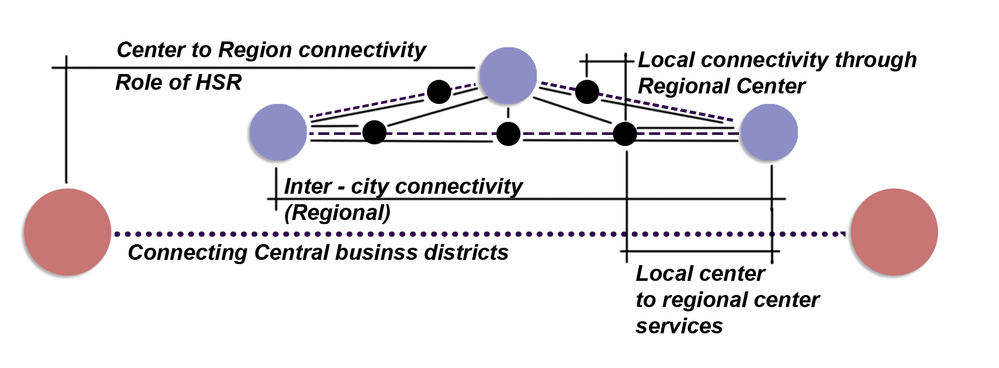

Project 03
High Speed Rail — Sydney to Melbourne (Strathfield)
Integrated Urbanism Studio (ARCH 9063) · Team of 5 · 2024 · University of Sydney
Guide: Prof. Deena Ridenour and Prof. Ian Woodcock · Location: Sydney, Australia
Aim of the Project
To establish the strategic context for High-Speed Rail between Sydney and Melbourne and the stations along the line, with a focus on the development of Strathfield Centre as a stop along the corridor.
Regional Context — Defining the Stations as Transport Hubs
The intention is to define the stations as key transport hubs, enhancing regional connectivity and facilitating economic growth along the High-Speed Rail corridor. The integration of multi-modal transport networks, supporting seamless movement between metropolitan and regional centres. This is intended to make the network stronger and more widely accessible.

Inter-city connectivity - connecting central business districts along the Sydney–Melbourne corridor.
Centre-to-region connectivity - the role of HSR in linking regional centres back to the metropolitan spine.
Local connectivity - through regional centres and out to local-centre services.
Travel time between key centres, with a focus on multi-modal connectivity in Strathfield (Transport for NSW, 2023).
{{ item.name }}
{{ item.goal }}
Impact on HSR
- {{ item }}
SWOT Analysis — Determining the Key Transport Hubs
Strengths & Opportunities
Weaknesses & Threats
Click a numbered marker on the map to reveal its point below.
05
06
06
07


02
{{ selCategoryLabel }}
{{ selText }}
Select a numbered marker on the map above to view its detail.


Station-by-station SWOT scoring along the proposed movement corridor.
Multi-Criteria Evaluation of Stations Against SWOT Parameters
Category
Strength
Opportunity
Weakness
Threat
{{ item.name }}
{{ item.s }}
{{ item.o }}
{{ item.w }}
{{ item.t }}
Total
7
8
4
8
Proposed Sydney–Melbourne Corridor and Vision
Establish a resilient, multimodal high-speed rail corridor that enhances inter-city connectivity between Sydney and Melbourne, catalysing the emergence of vibrant, well-connected transport hubs. The corridor will bridge metropolitan centres and regional communities — ensuring equitable access to employment, education, housing, and services — while enabling compact, sustainable urban development and balanced population growth. The HSR will act as a spine for integrated regional development, supporting economic diversification and a more liveable and accessible Australia.

Strathfield is positioned as the Metropolitan Centre, Strategic Transport Hub and Multimodal Node of the corridor.
Strathfield as a HSR Stop
EVOLUTION OF STARTHFIELD — URBAN FORM AND DENSITY


{{ typologyTitle }}
{{ typologyText }}
Select a marked lot cluster on the map to view its typology.
Evolution of Land Fragmentation
Source: Strathfield District Historical Society (n.d.)

{{ evolutionMaps.0.year }}
{{ evolutionMaps.0.note }}

{{ evolutionMaps.1.year }}
{{ evolutionMaps.1.note }}

{{ evolutionMaps.2.year }}
{{ evolutionMaps.2.note }}
→

Walking and cycling — 500m / 5-minute catchment, with conflict points marked.

Vehicular movement — designated parking, loading docks and conflict zones.

Through site — pedestrian path, not well lit or maintained.

Inefficient pedestrian crossings at key vehicular junctions — high traffic.

Congestion of bus, car and pedestrian traffic on the key active street during peak periods.

Large areas of lots used for private parking.

Conflict areas created in access to parking.

Key conflict area between train passengers, bus, car and pedestrian due to lack of segregation.
Vision, Themes and Strategic Design
By 2060, Strathfield will be a seamlessly connected, vibrant urban centre, positioned at the heart of Greater Sydney's strategic transport network. Anchored by the introduction of High-Speed Rail, it will evolve into a compact, walkable and inclusive district that offers diverse housing, thriving local businesses, and efficient access to employment and services across the metropolitan and regional corridor. Strathfield will embrace its role as a key interchange — enabling reliable, optimal travel routes to Sydney, Parramatta and key regional centres — while strengthening its own identity as a resilient, transit-oriented destination where people live, work, and connect.

Click a marker to view theme details
{{ themeTitle }}
- {{ item }}

Strategic plan — proposed light rail stop, land use pattern, and new active walkable commercial catchment.
Transport Network and Land Use Pattern
Land Use Pattern
Transport Network

Re-purposing zoning and land use to respond to the upcoming light rail proposed on Parramatta Road. A new road link to the south of the highway can ease the anticipated pressure of inter-modal changes.

Activating the station edge and addressing severance through the design of the HSR stop.

Reorienting traffic edges to get the buffer from high-traffic Redmyre Road — creating an active front for users of public open space and institutional buildings.
Public Domain, Key Moves and Future Strategy

1. Breaking of Larger Blocks
Proposed through a system of open and built spaces, with the intention to replicate this in similar scenarios.

2–3. Severance and Station Edge Activation
Addressing severance and the length of the station-linking access from all precincts, within 800m of other transport modes. Commercial directional movement improves walkability and access.

4. Education Precinct Active Edge
The education precinct aims to take the active edge from the busy road and establish safer access to the station precinct.


Illustrative masterplan for Strathfield - interchange, new plaza, retail and office core, surrounded by education, medical and residential precincts, with future growth extending west.
The emerging narrative of this research project highlights High-Speed Rail as a transformative force in reshaping Australia's urban and regional connectivity.
More work
Back to all projects →